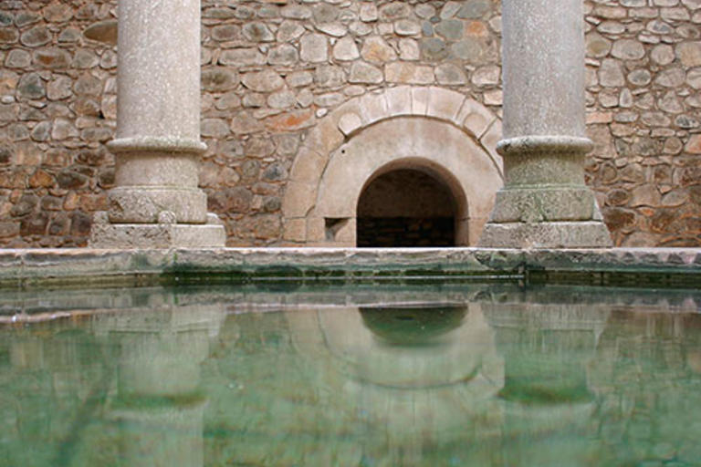

Visita · Girona
Singular construcció romànica (s. XII), inspirada en els banys romans, que té els elements més admirables en l'estança de l'entrada destinada a vestidor i sala de descans, coberta amb volta…